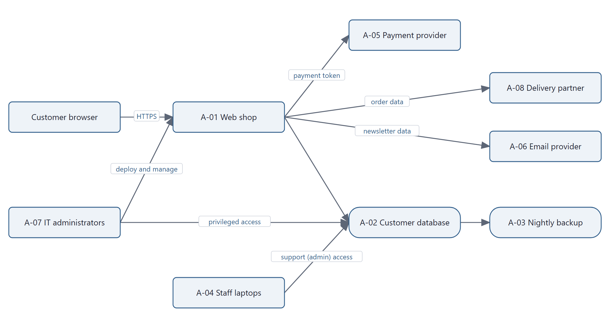
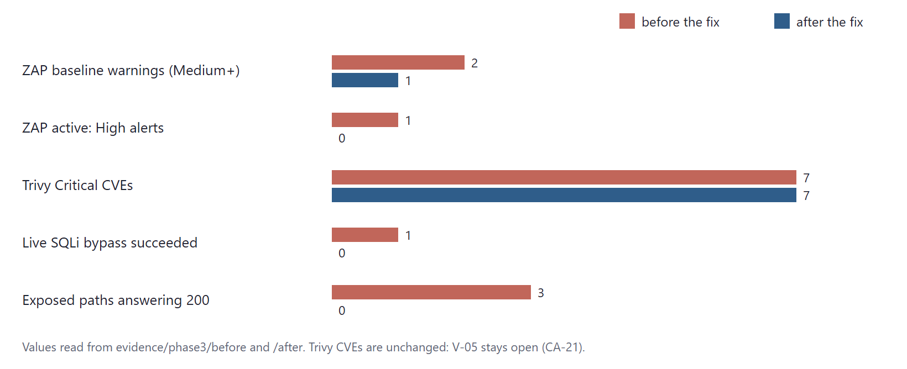
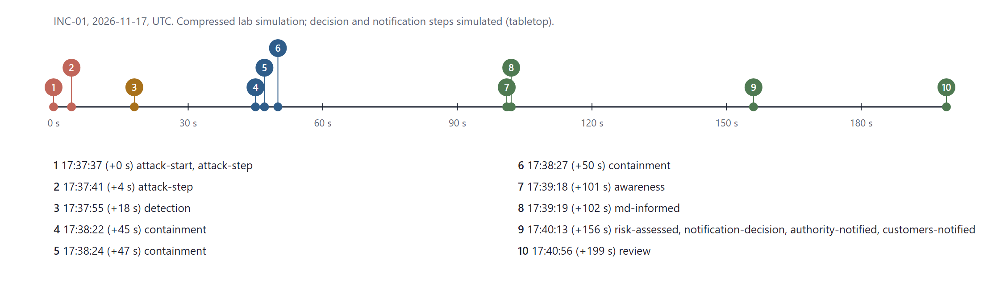
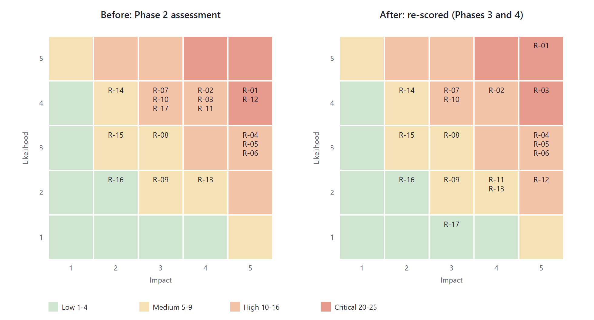

Case study: ShopNova GmbH (fictional Berlin web shop). All data is synthetic.
Semester project
Author: Bharadwaz Cirasanagandla
| University | [TO BE FILLED IN: university] |
|---|---|
| Course name | [TO BE FILLED IN: course name] |
| Lecturer | [TO BE FILLED IN: lecturer] |
| Matriculation number | [TO BE FILLED IN: matriculation number] |
| Submission date | [TO BE FILLED IN: submission date] |
Highlighted fields are placeholders and must be completed before submission (06-report/title-page.json).
Report version: 17 November 2026
Purpose. This report shows how governance, risk management, vulnerability management and incident response can work as one managed process for a small company that holds personal data of EU customers. The case company is ShopNova GmbH, a fictional Berlin web shop with about 20,000 customers. All data is synthetic, and the technical work ran in a local lab against OWASP Juice Shop.
What was done.
Current risk state (17 November 2026).
| Level | Phase 2 assessment | Now (re-scored with evidence) | Plan target |
|---|---|---|---|
| Critical | 2 | 2 | 0 |
| High | 9 | 7 | 0 |
| Medium | 5 | 6 | 9 |
| Low | 1 | 2 | 8 |
The plan target of 0 Critical and 0 High has not been reached. Two Critical risks are open, and both are worse than in Phase 2:
Both risks run under temporary exceptions by the Managing Director until 2026-11-24. One risk improved markedly: R-12 (SQL injection) went from 20 to 10 after the verified fix.
Key judgements.
Limitations. These include synthetic data, a lab-only test, simulated sign-offs and no usable Greenbone result. Two legal points are also unverified: whether the payment and delivery providers act as processors or as independent controllers, and whether NIS2 applies. Chapter 7 covers them in full.
Many organisations treat governance, risk management, vulnerability management and incident response as four separate activities. Each has its own owner, documents and tools. This report shows how the four can work as one managed process for a small company that holds personal data of EU customers. The company is held accountable under the GDPR for the results of all four together.
The report follows one case company from scope definition to a simulated personal data breach. Every claim can be traced to an artefact in the project repository. Items carry permanent IDs, for example POL-02 for a policy, R-12 for a risk, V-01 for a vulnerability and CA-06 for a corrective action, and every link between them is recorded in traceability.csv.
ShopNova GmbH is a fictional online shop for consumer electronics accessories, based in Berlin. All data in this project is synthetic.
| Characteristic | Value |
|---|---|
| Employees | about 50 |
| Registered customers | about 20,000, in the EU |
| Hosting | cloud, EU region (web shop, customer database, nightly backups) |
| Third parties | payment provider (tokenised card data), email and newsletter provider, delivery partner |
| End-user devices | about 40 laptops, partly used for remote work |
| Supervisory authority | Berlin Commissioner for Data Protection and Freedom of Information (BlnBDI) |
| Starting maturity | basic: no formal policies, ad hoc patching, no tested incident response plan |
In scope (asset IDs from 00-scope-and-setup/asset-register.csv):
Out of scope: physical security of buildings, the internal systems of third-party providers, and the HR and payroll system.
Five categories of customer personal data are processed (D-01 to D-05: identity, delivery address, payment reference, account credentials, marketing consent). For each one, the data inventory records the purpose, legal basis under Art. 6 GDPR, storage location, access roles, retention period and recipients. The data flow between assets is drawn in 00-scope-and-setup/data-flow.mmd and shown in Figure 1.

One weakness was kept in the case on purpose, because it is typical of a company at basic maturity: support staff hold administrator rights on the customer database (A-02). It is followed through every chapter: POL-04 records it as a known gap, it becomes risk R-01, and it is the entry point of the simulated incident INC-01.
The project was built in seven phases. Each phase ends with an automated validation script that checks completeness, ID formats and cross-references.
| Phase | Output | Validator |
|---|---|---|
| 0 Scope and setup | asset register, data inventory, data flow, ID scheme | validate_phase0.py |
| 1 Governance | roles, nine policies, framework mapping, KPIs, gap assessment | validate_phase1.py |
| 2 Risk management | risk register, treatment plan, heat map, DPIA | validate_phase2.py |
| 3 Vulnerability management | scans of a local lab, vulnerability register, fixes, rescans | validate_phase3.py |
| 4 Incident response | simulated breach, detection, Art. 33/34 notifications, review | validate_phase4.py |
| 5 Integration | re-scored risks, KPI results, policy updates | validate_phase5.py |
| 6 Report | this document | check_report_numbers.py |
The reference frameworks are ISO/IEC 27001:2022 (ISO/IEC, 2022a), NIST CSF 2.0 (NIST, 2024), and the GDPR together with the German BDSG. No assignment brief was available, so this choice is an assumption, recorded in the decision log for confirmation with the lecturer. The technical work in Phases 3 and 4 uses a local Docker lab. OWASP Juice Shop, a deliberately vulnerable web shop, stands in for ShopNova's shop (A-01). Every scan targets only that local container.
Chapter 2 sets up governance. Chapter 3 identifies and treats risks. Chapter 4 runs a vulnerability management cycle. Chapter 5 simulates and handles a personal data breach. Chapter 6 feeds the evidence back into risks, KPIs and policies. Chapter 7 states the limitations, and Chapter 8 concludes. Appendix A lists the evidence files, and the references follow at the end. All times are UTC (Berlin = UTC+1).
Governance answers three questions: who decides, by which rules, and how is compliance checked. For ShopNova, the starting answer to all three was "nobody formally". This chapter describes the structure that was set up in Phase 1 (01-governance/).
The Managing Director is accountable for information security and data protection, because the GDPR places accountability on the controller (Art. 5(2) and 24 GDPR). Two specialist roles support the Managing Director:
The Security and Privacy Steering Meeting (Managing Director, Information Security Officer, DPO, Head of IT) meets every month. A RACI matrix (raci-matrix.csv) assigns 19 recurring activities, each with exactly one Accountable role. Examples are approving policies, accepting risks, deciding on breach notification and handling data subject requests.
Nine policies (POL-01 to POL-09) were written. The top-level Information Security Policy (POL-01) sets measurable objectives, links them to KPIs, and lists the topic-specific policies:
| ID | Policy | Main purpose | Owner |
|---|---|---|---|
| POL-01 | Information Security Policy | direction, objectives, classification | Information Security Officer |
| POL-02 | Vulnerability and Patch Management | scanning, deadlines by severity, verification | Head of IT |
| POL-03 | Data Protection | GDPR principles, rights, retention, DPIA | Managing Director |
| POL-04 | Access Control | least privilege, MFA, privileged access | Head of IT |
| POL-05 | Incident Response and Breach Notification | lifecycle, severity, Art. 33/34 | Information Security Officer |
| POL-06 | Supplier Security | processor or controller role, Art. 28 agreements | Information Security Officer |
| POL-07 | Backup and Recovery | 3-2-1 rule, restore tests | Head of IT |
| POL-08 | Acceptable Use and Endpoint | laptops, remote work | Head of IT |
| POL-09 | Risk Management | scales, appetite, treatment rules | Information Security Officer |
Every policy has the same six sections: purpose, scope, roles, policy statements, compliance, review. The validator enforces this. Three design choices are worth noting:
framework-mapping.csv maps every policy to at least one ISO/IEC 27001:2022 Annex A control, one NIST CSF 2.0 category and one GDPR or BDSG article, with 110 references in total. For example, POL-05 maps to A.5.24–A.5.28 (incident management), to the CSF categories RS.MA, RS.AN, RS.CO and RS.MI, and to Art. 33 and 34 GDPR. The mapping shows that the policy set covers the governance function that NIST added in CSF 2.0 (GV: organisational context, risk strategy, roles, policy, oversight and supply chain). It also lets an auditor check coverage from either side: from a control to a policy, or from a policy to a control.
Eleven KPIs (KPI-01 to KPI-11) turn the objectives into numbers. Each one has a formula, a target, an owner, a data source and the phase in which it is first measured. Most baselines are "not measured" or 0%, which is honest for a company at basic maturity. The KPIs that later chapters report are KPI-01 (time to fix Critical vulnerabilities, Phase 3), KPI-05 (hours from awareness of a breach to the notification decision, Phase 4) and KPI-06 (time to detect, Phase 4).
The gap assessment (gdpr-baseline-gap-assessment.md) compares the current state with GDPR, ISO/IEC 27001 and NIST CSF requirements. It records 21 gaps. On the NIST CSF 2.0 tiers, ShopNova sits at Tier 1 (Partial) in all six functions, with Tier 2 (Risk Informed) as the 12-month target.
Writing policies is fast; making them true is slow. The value of Phase 1 lies less in the text of the nine policies than in three properties:
The limitation is that the governance structure has not yet been tested by real use. Chapters 4 and 5 provide that first test.
This chapter applies the method of POL-09 to ShopNova (02-risk/). It identifies the risks to customer data, scores them, chooses treatments, and looks at the same risks from the customers' side in a data protection impact assessment (DPIA).
The method follows ISO/IEC 27001:2022 clauses 6.1.2 and 6.1.3 and the process of ISO/IEC 27005:2022: establish the context, identify, analyse, evaluate, treat, then monitor and review.
| Score | Level | Appetite |
|---|---|---|
| 1–4 | Low | within appetite; risk owner may accept |
| 5–9 | Medium | tolerable; accepted with Information Security Officer sign-off |
| 10–16 | High | outside appetite; treat within 90 days or Managing Director accepts in writing |
| 20–25 | Critical | outside appetite; treat at once; only a temporary exception of at most 60 days |
Every risk is scored twice: a current score with today's controls, and a target score once the planned actions are done. The difference shows the value of the treatment plan.
Sixteen risks were identified (R-01 to R-16). The heat map (risk-heatmap.md) is generated from the register by a script, so the two cannot drift apart.
| Level | Current | Target |
|---|---|---|
| Critical | 2 | 0 |
| High | 8 | 0 |
| Medium | 5 | 9 |
| Low | 1 | 7 |
The two Critical risks share a pattern: one technical failure exposes the whole customer base of about 20,000 people.
The High risks are:
R-11 is unusual: it does not cause a breach, but it turns any breach into a compliance failure.
The vulnerability scans in Chapter 4 later found a misconfiguration that none of the 16 risks covered: exposed files, public access logs and a wildcard CORS header. It was added as R-17 (High), which brings the register to 17 risks. This is the feedback loop between the layers working as intended.
Fifteen risks are reduced. R-16 (loss of consent records at the email provider) is Low and was accepted by its owner. The treatment plan (risk-treatment-plan.csv) has 18 actions (CA-01 to CA-18). Each one has an owner, a due date, a status and the ISO/IEC 27001:2022 Annex A controls it implements. Several actions treat more than one risk:
All ten High and Critical risks have a treatment plan (KPI-10 = 100%). The plan's target is that, once every action is done, no risk stays above Medium (0 Critical, 0 High). This was the Phase 2 plan, not the outcome. After testing, Chapter 6 shows 2 Critical risks (R-01 at 25, R-03 at 20) and 7 High risks still open on 17 November 2026. Two actions are already running in this project:
CA-01, removing support staff's admin rights, is deliberately still "Planned". This keeps the weakness open for the incident simulation.
Risk to ShopNova and risk to its customers are not the same thing. A DPIA (Art. 35 GDPR) therefore looks at the same risks from the data subjects' point of view.
The measures (d) are the same CA actions as in the treatment plan.
The method is simple on purpose. A 5 × 5 matrix is easy to explain to management and to repeat. Its known weaknesses are that the scores are ordinal (a 20 is not "twice as bad" as a 10) and that the experts judging the scores are not calibrated. Two things reduce these weaknesses:
This chapter runs one full cycle of POL-02 against a local lab: discover, assess, prioritise, fix, then verify by rescanning (03-vulnerability/). It is also the first run of the monthly scanning action CA-05.
ShopNova's web shop (A-01) is represented by OWASP Juice Shop 20.4.0-SNAPSHOT (Kimminich, 2026), a deliberately vulnerable shop application.
tm-lab) that has no route to the internet or to the host.network-isolation.txt).| Step | Tool | Before the fix | After the fix |
|---|---|---|---|
| Ports and services | Nmap (Lyon, 2009), -sV -sC -p- | 1 open port (3000), wildcard CORS header | 1 open port, now served by the hardening proxy |
| Image dependencies | Trivy (Aqua Security, 2026) | 116 known CVEs: 7 Critical, 23 High, 69 Medium, 15 Low, 2 Unknown | unchanged (116), same libraries |
| Passive web scan | ZAP baseline (ZAP, 2026) | 3 warnings (2 Medium, 1 informational): CSP header not set, cross-domain misconfiguration, modern web application | 2 warnings (1 Medium, 1 informational): CSP style-src 'unsafe-inline', modern web application |
| Active scan of the login | ZAP active scan, one request | SQL Injection (High) in the email parameter | no SQL injection |
| Live attack | login with ' OR 1=1-- | HTTP 200, logged in as admin@juice-sh.op (17:16:40 UTC) | HTTP 401, no token (17:23:05 UTC) |
| Manual check | robots.txt, then /ftp, /support/logs | files and access logs public | HTTP 403 |

A ZAP baseline scan cannot find SQL injection. It only reads responses and never sends attacks. The injection was found by a targeted active scan of the single login request, then confirmed by the live attack. This kept the active testing short and inside the agreed scope.
Two runs were repeated, and both attempts are kept in the run logs:
Six findings were recorded in vulnerability-register.csv. V-06 was added later, from the incident.
| ID | Finding | CVSS 3.1 | Business priority | Risk | Fix | Status |
|---|---|---|---|---|---|---|
| V-01 | SQL injection in the login | 9.8 Critical | P1, 3 days | R-12 | CA-06 (CA-07 tested) | Fixed |
| V-02 | CSP header not set | 4.3 Medium | P2, 30 days (raised) | R-13 | CA-16 | Fixed (residual) |
| V-03 | Wildcard CORS | 4.3 Medium | P3, 90 days | R-17 | CA-19 | Fixed |
| V-04 | Exposed /ftp, access logs, keys | 5.3 Medium | P2, 30 days (raised) | R-17 | CA-20 | Fixed |
| V-05 | 116 vulnerable libraries | 9.8 Critical (CVE-2015-9235) | P1, 7 days | R-03 | CA-21 | Open, due 2026-11-24 |
| V-06 | Shared support account with admin role | 8.1 High | P1, 3 days (raised) | R-01 | CA-01 (CA-22, CA-23) | Mitigated |
CVSS measures technical severity, not business impact (FIRST, 2019). Business priority therefore starts from the CVSS severity and may be raised by at most one level for ShopNova's context, as POL-02 statement 3 allows:
Two medium findings were raised:
The deadlines follow POL-02 statement 4. V-01 got the 72-hour deadline, because it was exploited and is internet-facing. The validator recalculates every CVSS score from its vector and checks every priority and deadline against these rules.
Two fixes for the SQL injection (R-12) were tested with the same requests from inside the lab network (fix-options.md):
| Request | Unpatched app | Option A: WAF (ModSecurity CRS) | Option B: patched login route |
|---|---|---|---|
' OR 1=1-- | 200, token issued | 403 | 401 |
admin@juice-sh.op'-- | 200, token issued | 403 | 401 |
| Real user, correct password | 200 | 200 | 200 |
Both options stopped both payloads without blocking real users.
Three more findings (V-02, V-03, V-04) were fixed by an nginx hardening proxy in front of the patched app: it adds security headers, removes the wildcard CORS header and blocks /ftp, /encryptionkeys and /support/logs. The proxy took over the same address and network name, so the "after" scans used exactly the same target as the "before" scans.
V-05 remains open. The 116 library vulnerabilities include authentication bypasses (CVE-2015-9235 in jsonwebtoken, CVE-2020-15084 in express-jwt). Fixing them means upgrading dependencies in the source code and rebuilding, which this lab cannot do. CA-21 tracks the work with the POL-02 deadline of 2026-11-24. A WAF cannot help here, because a forged token looks like a valid one. Chapter 6 therefore raises R-03 instead of lowering it.
Greenbone produced no usable result. Greenbone Community Edition was set up as the planned network vulnerability scanner, attached to the lab network, with its admin password changed.
Chapter 7 records this limitation, and the full log is in 03-vulnerability/phase3-summary.md.
The cycle changed earlier phases, which is the point of an integrated process:
This chapter simulates and handles a personal data breach, INC-01, under POL-05 (04-incident/). The attack ran against the same local lab as Chapter 4. Detection used the shop's own logs, not a SIEM. The human steps were run as a tabletop exercise: informing management, deciding, notifying. All times are UTC (Berlin = UTC+1), and the timeline is a compressed lab simulation.
The scenario turns the deliberate weakness of the case into an incident. An attacker phishes the password of the shared support account. As at ShopNova (R-01), the account holds administrator rights. The SQL injection from Chapter 4 was already fixed, so the attacker needs a real password: a realistic next step once one door is closed.
The attack script (tools/phase4_attack.py) logged in through the normal shop entry point and then:
It sent 28 requests between 17:37:37 and 17:37:41 UTC. All 24 lab accounts were exposed: email address, username, role, last login IP address and account dates. The application masked the password field and the two-factor secrets. In the ShopNova scenario the same requests return all of about 20,000 customer accounts, so the assessment uses that scale.
The detection script (tools/phase4_detect.py) reads the nginx access log of the shop proxy and applies four rules:
| Rule | Logic | Fired |
|---|---|---|
| 1 | Admin user-data endpoints accessed | yes, 26 requests |
| 2 | 20 or more API requests from one client within 60 seconds | yes, 28 requests |
| 3 | Login followed by admin data access within 5 minutes | yes |
| 4 | SQL injection indicators | no, correctly: the attacker used valid credentials |
The first alert was raised at 17:37:55 UTC, 18 seconds after the attack started (KPI-06, measured in the lab). In the lab the detection job ran right after the attack. With a 15-minute schedule in production, the worst case would be about 15 minutes, still well inside the 24-hour KPI target.
| Time (UTC) | Action | Action ID |
|---|---|---|
| 17:38:22 | Support account password reset | CA-23 |
| 17:38:24 | Proxy rule blocks the admin user-data endpoints | CA-22 |
| 17:38:27 | Attack replayed: login refused (401), endpoints blocked (403). Contained 50 seconds after the attack started |
The password reset alone would not have been enough. The application's login tokens (JWTs) stay valid after a password change, so the attacker's existing token would have kept working. Closing the endpoints was necessary, and token revocation became corrective action CA-24.
The block also had a side effect: it stopped new customer sign-ups, because sign-up uses the same endpoint (POST /api/Users). CA-25 narrowed the rule in Phase 5, and a test confirmed sign-up works (201) while reading user data stays blocked (403).
Awareness, in the sense of Art. 33 GDPR, was recorded at 17:39:18 UTC, once triage confirmed that personal data had been accessed. Containment had already begun, because the IT team acts on a security incident before it is formally classified as a personal data breach. The 72-hour deadline therefore runs to 2026-11-20 17:39 UTC.
The breach assessment (INC-01-breach-assessment.md) follows EDPB Guidelines 9/2022 (EDPB, 2023), with the ENISA severity method as a cross-check (ENISA, 2013):
| Question | Decision |
|---|---|
| Personal data breach (Art. 4(12))? | Yes: confidentiality breach of D-01 and D-06 |
| Notify the BlnBDI (Art. 33)? | Yes: malicious actor, large volume; a risk cannot be ruled out |
| High risk (Art. 34)? | No: no passwords, payment or sensitive data; ENISA severity 1.5 ("Low") |
| Inform customers? | Yes, voluntarily, with the content of Art. 34(2) |
| Severity (POL-05) | SEV-1 (more than 1,000 customers) |
The "not high risk" conclusion is a judgement. The factors pulled in both directions:
Another assessor could reasonably decide differently. Weighing the scale and the phishing risk more heavily would make Art. 34 communication mandatory. Because ShopNova informs customers voluntarily with the same content, customers receive the same information either way. The difference is the legal obligation, not the practical outcome.
The notification texts.
INC-01-art33-notification.md): covers the four elements of Art. 33(3), namely the nature of the breach with categories and approximate numbers, the DPO contact, the likely consequences, and the measures taken.INC-01-art34-customer-notice.md): explains in plain language what happened, what was and was not affected, and how to recognise phishing in ShopNova's name.
| Time (UTC) | Event |
|---|---|
| 17:37:37 | Attack starts: login with the phished support password |
| 17:37:41 | Last attacker request |
| 17:37:55 | Detection: three High alerts |
| 17:38:22–17:38:27 | Containment and verification |
| 17:39:18 | Awareness: personal data breach confirmed |
| 17:39:19 | Managing Director and DPO informed (simulated) |
| 17:40:13 | Risk assessed; decision; BlnBDI notified; customers informed (all simulated) |
| 17:40:56 | Post-incident review (simulated) |
tools/breach_clock.py checks the timeline against three milestones:
All three were met. The time from awareness to the notification decision was 55 seconds (KPI-05, simulated). The four simulated steps share one timestamp because they were recorded together once their documents were finished. Real decisions would take hours, which is why these figures say little about real performance.
The review (INC-01-post-incident-review.md) found five root causes:
It also found that the accepted exception for R-01, Critical for four weeks, materialised within one day. Its actions:
A further lesson appeared during Phase 5. Docker restarted at 18:04 UTC, and the lab app re-created its database, silently undoing the password reset. The CA-25 test found it at 18:09 UTC, and the reset was re-applied. Containment that lives in application state has to be verified again after every restart.
Chapters 2 to 5 produced policies, risks, vulnerabilities and an incident. This chapter feeds the evidence of Chapters 4 and 5 back into the risk register, the KPIs and the policies (05-integration/). Together, these links make the four layers one managed process.
Every risk was re-scored on 2026-11-17. The Phase 2 scores are kept as the "before" state, and each new score names its evidence (05-integration/risk-rescoring.md).

| Level | Before (Phase 2) | After (re-scored) | Target |
|---|---|---|---|
| Critical | 2 | 2 | 0 |
| High | 9 | 7 | 0 |
| Medium | 5 | 6 | 9 |
| Low | 1 | 2 | 8 |
The target has not been reached. The target column is the treatment plan from Chapter 3: 0 Critical and 0 High once every action is done. On 17 November 2026 the register shows 2 Critical and 7 High risks, for three reasons:
The "before" column has 17 risks: the 16 from Chapter 3 plus R-17, which was added in Chapter 4. Five risks changed score:
| Risk | Before | After | Evidence |
|---|---|---|---|
| R-12 SQL injection | 20 Critical | 10 High | V-01 fixed and verified (CA-06). Not lower: only the login was scanned, and the WAF is not deployed |
| R-17 misconfiguration | 12 High | 3 Low | V-03 and V-04 fixed and verified (CA-19, CA-20) |
| R-11 breach not detected or notified | 16 High | 8 Medium | INC-01: detected in 18 s, decision in 55 s. Not lower: compressed lab, few detection rules |
| R-01 support admin rights | 20 Critical | 25 Critical | INC-01 happened; the root causes CA-01 and CA-02 are still open |
| R-03 vulnerable components | 16 High | 20 Critical | V-05: 116 CVEs, 7 Critical, authentication bypasses; CA-21 open until 2026-11-24 |
V-05 is not scored as fixed. The Phase 5 validator enforces this rule: a risk exposed by an open vulnerability may not be re-scored below its Phase 2 score. R-03 therefore went up, not down.
Two risks went up. A risk process that only ever lowers scores measures effort, not risk. The two remaining Critical risks (R-01, R-03) are each under a temporary exception by the Managing Director until 2026-11-24, when their actions are due. POL-09 allows such an exception for at most 60 days.
Twelve risks keep their Phase 2 score, because the lab did not test them: phishing, admin accounts, ransomware, cloud configuration, credential stuffing, laptops, suppliers, processor contracts, skimming, retention, data subject requests and consent records.
| KPI | Value | Type |
|---|---|---|
| KPI-01 time to fix Critical findings | 0.13 h (V-01) | measured in the lab |
| KPI-02 Critical and High fixed on time | 100% (1 of 1 due) | measured in the lab |
| KPI-05 awareness to notification decision | 55 s (0.02 h) | simulated |
| KPI-06 time to detect | 18 s | measured in the lab |
| KPI-10 High and Critical risks with a plan | 100% (9 of 9) | derived from the register |
The other six KPIs (KPI-03, 04, 07, 08, 09, 11) were not measured. The lab has no identity provider, training records, restore tests, supplier reviews or data subject requests to measure them on.
All lab values are compressed. The attack, detection and decisions happened within about three minutes, and the decisions were a tabletop exercise. The values show that the process and the tools work. They are not estimates of ShopNova's real speed. The full table with evidence files is in 05-integration/kpi-results.md.
The incident led to changes in two policies, which completes the loop from incident back to governance:
| Policy | Change | Corrective action |
|---|---|---|
| POL-04 Access Control, version 1.1 | New statement 10: every token is invalidated on a password reset; staff tokens are valid for at most 1 hour. Known gap: exception shortened to 2026-11-24, and the false compensating control "support accounts are named, not shared" corrected | CA-24 |
| POL-05 Incident Response, version 1.1 | Statement 10: containment revokes tokens; emergency blocks are narrow and keep sign-up, login and checkout working; containment is re-verified after restarts | CA-24, CA-25 |
The links are recorded in traceability.csv as INC-01 resolved-by CA-24 and CA-24 updates POL-04, and the same for CA-25 and POL-05. The whole repository holds 143 links. Two complete chains show both directions of the loop:
The results of this project must be read with the following limits in mind.
Synthetic case and data. ShopNova GmbH, its staff numbers, customers, risk scores and financial bands are fictional. All personal data in the repository is synthetic: the 24 lab accounts are Juice Shop's built-in test users, and the scale of about 20,000 customers is a scenario assumption.
Lab only. The vulnerability and incident work ran against OWASP Juice Shop, a deliberately vulnerable training application, in a local Docker lab. It did not run against a real shop. The findings show how the process works, not what ShopNova's real exposure is. Specific limits:
Compressed time. The incident timeline is a compressed lab simulation. The attack, detection, containment and decisions took about three minutes. KPI-01, KPI-05 and KPI-06 are therefore lab values, not estimates of production performance.
Simulated sign-offs and DPO advice. Management approvals, the DPO's advice, the notification to the BlnBDI and the customer notice are simulated and marked "(simulated)" in the documents. Nothing was sent to any authority or person.
Greenbone. The network vulnerability scanner Greenbone Community Edition was installed as containers, attached to the lab network, and its admin password was changed. Its first feed synchronisation takes hours.
The vulnerability findings in Chapter 4 therefore rest on Nmap, Trivy, ZAP and manual checks. Greenbone's network-level checks are missing, which mainly affects findings on the operating system and services.
Two legal points are not verified. They should be confirmed with the lecturer or a lawyer:
No assignment brief. The requirements checklist, the choice of frameworks (ISO/IEC 27001:2022, NIST CSF 2.0, GDPR/BDSG) and the citation style are assumptions, recorded in the decision log.
Times. All times in this report and the evidence are UTC. Berlin local time in November is UTC+1, so for example the attack at 17:37 UTC took place at 18:37 in Berlin.
This project set out to show that governance, risk management, vulnerability management and incident response work better as one process than as four separate activities. The case of ShopNova GmbH supports that claim, within the limits set out in Chapter 7.
POL-02 set the remediation deadlines used in Chapter 4, POL-05 the 72-hour clock used in Chapter 5, and POL-09 the scoring used throughout.
The integration step is what makes the difference. Without it, the incident would have been a standalone report. With it:
traceability.csv, from a policy to a risk, a vulnerability, an incident, a corrective action, and back to a re-scored risk or an updated policy.Current risk state (17 November 2026). The register shows 2 Critical, 7 High, 6 Medium and 2 Low risks. The Phase 2 treatment plan aimed at 0 Critical and 0 High. That target has not been reached. The two Critical risks are worse than in Phase 2: R-01 went from 20 to 25, and R-03 from 16 to 20. The plan describes where ShopNova wants to be; the register describes where it is.
What remains open is stated plainly:
For a company at ShopNova's level of maturity, the next step is not more documents. It is doing those four actions on time, and then running this loop again.
Generated by tools/build_report.py from the registers and the timeline. Every path is relative to the project root and exists in the repository. Related IDs are the items that cite the file.
| No. | Evidence file | Content | Related IDs |
|---|---|---|---|
| 1 | evidence/phase3/after/greenbone-ospd-openvas-log-1.txt | Greenbone scanner log: 'failed to load VTs' | CA-05 |
| 2 | evidence/phase3/after/greenbone-report.xml | Greenbone run 3: host reached, port 3000 not tested (limitation) | CA-05 |
| 3 | evidence/phase3/after/greenbone-run1-empty-report.xml | Greenbone run 1: empty, scanner tests not loaded | CA-05 |
| 4 | evidence/phase3/after/manual-exposed-files.txt | manual check of /ftp, logs, keys | V-04 |
| 5 | evidence/phase3/after/network-isolation.txt | lab network reaches the shop only | CA-05 |
| 6 | evidence/phase3/after/nmap.nmap | Nmap port and service scan | V-03 |
| 7 | evidence/phase3/after/run-log.txt | every command with UTC time and exit code | CA-05, KPI-01 |
| 8 | evidence/phase3/after/sqli-login-bypass.json | live SQL injection login attempt | V-01 |
| 9 | evidence/phase3/after/trivy.json | Trivy image scan (JSON) | V-05 |
| 10 | evidence/phase3/after/zap-active-alerts.txt | ZAP active scan of the login, alerts | V-01, V-02 |
| 11 | evidence/phase3/after/zap-baseline.json | ZAP passive baseline scan | V-02, V-03 |
| 12 | evidence/phase3/before/manual-exposed-files.txt | manual check of /ftp, logs, keys | V-04 |
| 13 | evidence/phase3/before/network-isolation.txt | lab network reaches the shop only | CA-05 |
| 14 | evidence/phase3/before/nmap.nmap | Nmap port and service scan | V-03 |
| 15 | evidence/phase3/before/run-log.txt | every command with UTC time and exit code | CA-05, KPI-01 |
| 16 | evidence/phase3/before/sqli-login-bypass.json | live SQL injection login attempt | V-01 |
| 17 | evidence/phase3/before/trivy-table.txt | Trivy image scan (table) | V-05 |
| 18 | evidence/phase3/before/trivy.json | Trivy image scan (JSON) | V-05 |
| 19 | evidence/phase3/before/zap-active-alerts.txt | ZAP active scan of the login, alerts | V-01 |
| 20 | evidence/phase3/before/zap-baseline.json | ZAP passive baseline scan | V-02, V-03 |
| 21 | evidence/phase3/options/fix-options-sqli.json | same injection against WAF and patched route | V-01 |
| 22 | evidence/phase4/attack/attack-log.json | INC-01 attacker requests | INC-01 |
| 23 | evidence/phase4/attack/containment-verification.json | INC-01 attack replay after containment | INC-01, V-06 |
| 24 | evidence/phase4/attack/exfiltration-summary.json | INC-01 exposed fields and counts (no full data) | V-06 |
| 25 | evidence/phase4/detection/alerts.json | INC-01 detection alerts | INC-01, KPI-06, V-06 |
| 26 | evidence/phase4/logs/proxy-access.log | detection source: proxy access log | CA-15 |
| 27 | evidence/phase4/response/containment-log.txt | INC-01 containment steps | CA-22, CA-23, INC-01 |
| 28 | evidence/phase4/response/exercise-log.txt | INC-01 response steps (simulated steps marked) | INC-01 |
| 29 | evidence/phase5/ca25-containment-narrowed.json | CA-25 test: sign-up works, data reads blocked | CA-25 |
| 30 | evidence/phase5/ca25-test-run1-reset-lost-after-restart.json | CA-25 first run: restart had undone the CA-23 reset | CA-23 |
Citation style: author–date. No style was specified, so this one is an assumption.
aquasec/trivy:latest (version recorded in evidence/phase3/before/trivy-version.txt).docker-compose.yml from greenbone.github.io).bkimminich/juice-shop.instrumentisto/nmap.owasp/modsecurity-crs:nginx.zaproxy/zap-stable.